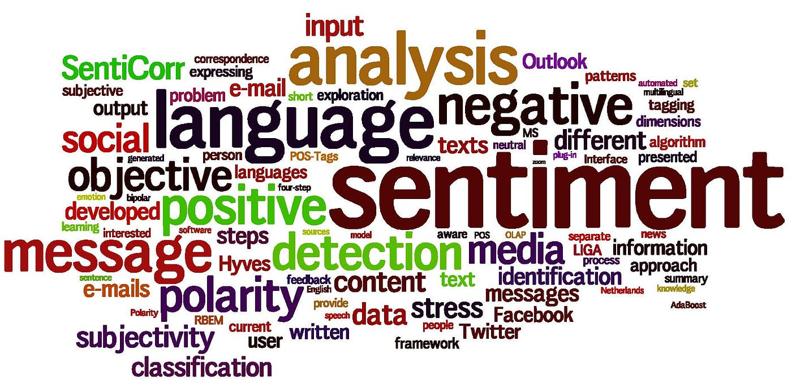
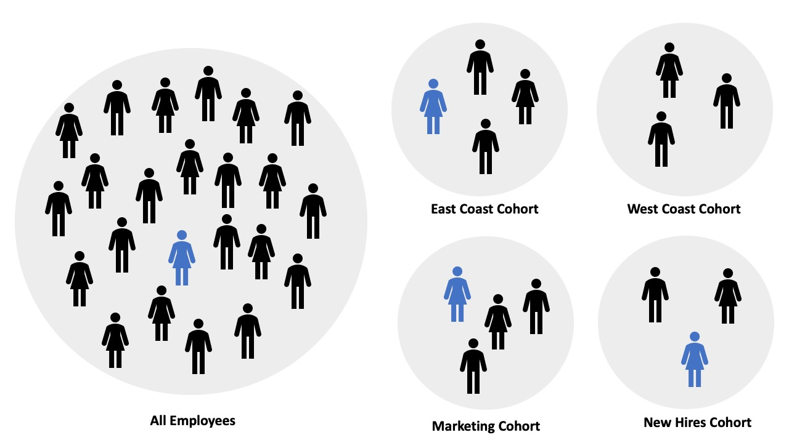

This project is a real-time AI-powered waste classification tool designed to support smarter recycling. It uses a webcam-based computer vision system to instantly identify common waste types such as plastic, paper, metal, and food at the point of disposal. The goal is to reduce contamination in recyclables, improve user awareness, and encourage consistent recycling behavior across different locations. A lightweight EfficientNetB0 model was fine-tuned and selected over MobileNetV2 based on performance, achieving 93% test accuracy and macro F1-score across 9 waste categories. The model is deployed via Hugging Face Spaces and integrated into an interactive, multilingual-ready Gradio interface, allowing users to receive real-time sorting guidance through a simple browser interface, no installation or special hardware required. The tool also acts as a live demo to help raise awareness and support conversations with communities and decision-makers about better recycling solutions.
Click here to view the code

To explore the effectiveness of different sentiment analysis methods, this study implemented a range of machine learning models, including Logistic Regression, Support Vector Machines (SVC), Decision Trees, Random Forests, Extra Trees Classifier, K-Nearest Neighbors, and Bernoulli Naive Bayes. Text data was preprocessed using standard NLP techniques and vectorized using TF-IDF. To address class imbalance, SMOTE was applied, and models were evaluated using cross-validation, ROC-AUC, and classification reports. Hyperparameter tuning was conducted using GridSearchCV to optimize model performance. This comprehensive modeling approach allowed for a robust comparison of traditional classifiers in predicting sentiment from Amazon product reviews.
Click here to view the code
This project applies RFM (Recency, Frequency, Monetary) analysis on banking transaction data to segment customers based on behavior. After calculating RFM scores, KMeans clustering was used to identify key customer groups (e.g., Loyal Customers, At Risk). The insights help BankTrust reduce churn and improve marketing strategies. An interactive dashboard was also built with Streamlit to visualize segments and simulate engagement scenarios.
Click here to view the code

This project combines Cohort Analysis, RFM Segmentation, and Predictive Modeling to understand and optimize customer lifecycle management. Customers were grouped by purchase behavior, segmented using K-Means clustering on RFM scores, and analyzed for retention trends. The BG/NBD model was used to predict purchase frequency, while Random Forest and XGBoost forecasted future spending. These insights support targeted marketing, improved retention, and data-driven decision-making for customer value optimization
Click here to view the code

This project explores whether the average duration of movies on Netflix has been declining over time. Using pandas, NumPy, and matplotlib, the analysis uncovers trends in movie lengths and investigates factors that may influence shifts in production and viewer preferences on the platform.
Click here to view the code

This project leverages SQL to build a structured healthcare database for patient data management and analysis. It includes creating relationships between medical records, cleaning and transforming healthcare data, and generating insights such as patient conditions, hospital stay duration, and average treatment costs. Advanced features like stored procedures, triggers, and events support automation, personalized reminders, and efficient data handling, all aimed at improving healthcare operations and patient outcomes.
Click here to view the code

This project explores ride behavior trends for Cyclistic bike-share users using SQL. Data from four months was cleaned, transformed, and unified into a single view. Analysis focused on ride duration patterns by membership type and day of the week. Key insights include maximum and minimum ride lengths, behavioral differences between casual and member riders, and peak usage days, supporting business decisions around marketing, user engagement, and service optimization.
Click here to view the code
This Power BI dashboard presents a visual analysis of Cyclistic bike-share data from January to April, focusing on ride durations, user membership types, and weekly usage trends. Built on SQL-cleaned data, it highlights key insights such as maximum and minimum ride lengths, differences in behavior between casual and member users, and peak riding days. With interactive filters and dynamic visuals, the dashboard supports data-driven decision-making for marketing strategies and operational improvements.

This project focus